clear all; close all; clc
load handel v = y'; n = length(v); t = (1:length(y))/Fs; %define time domain time = length(y)/Fs; % find the length of music L = length(v)/Fs; k=(2*pi/L)*[0:n/2 -n/2:-1]; ks=fftshift(k); %define fourier domain
define a time steps for sampling spectrogram
tslide = 0:0.1:time;
%three different spectrogram with gaussian gabor filter, %width = 1 Svt_spec = []; for j = 1:length(tslide) gf = exp(-1*(t-tslide(j)).^2); Vgf = gf.*v; Vgtf = fft(Vgf); Svt_spec = [Svt_spec;fftshift(abs(Vgtf))]; figure(3) subplot(3,1,1),plot(t,v,"k",t,gf,"r"); xlabel('Time [sec]'); ylabel('Amplitude'); title('Signal of Interest, v(n)'); subplot(3,1,2),plot(t,Vgf,"k"); xlabel('Time [sec]'); ylabel('Amplitude'); title('Signal of Interest Gabor, vg(n)'); subplot(3,1,3),plot(ks,abs(fftshift(Vgtf))/max(abs(Vgtf))) xlabel('frequency (\omega)'), ylabel('FFT(vg)') end figure(4) pcolor(tslide,ks,Svt_spec.'),shading interp title('the Gaussian Gabor filter, width = 1'); colormap(hot)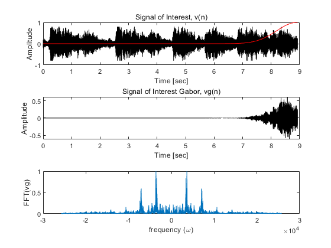 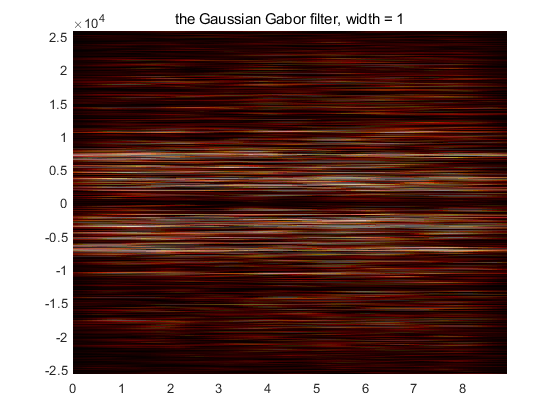
%width = 100 Svt_spec2 = []; for j = 1:length(tslide) gf = exp(-100*(t-tslide(j)).^2); Vgf = gf.*v; Vgtf = fft(Vgf); Svt_spec2 = [Svt_spec2;abs(fftshift(Vgtf))]; figure(5) subplot(3,1,1),plot(t,v,"k",t,gf,"r"); xlabel('Time [sec]'); ylabel('Amplitude'); title('Signal of Interest, v(n)'); subplot(3,1,2),plot(t,Vgf,"k"); xlabel('Time [sec]'); ylabel('Amplitude'); title('Signal of Interest Gabor, vg2(n)'); subplot(3,1,3),plot(ks,abs(fftshift(Vgtf))/max(abs(Vgtf))) xlabel('frequency (\omega)'), ylabel('FFT(vg2)') end figure(6) pcolor(tslide,ks,Svt_spec2.'),shading interp title('the Gaussian Gabor filter, width = 100'); colormap(hot)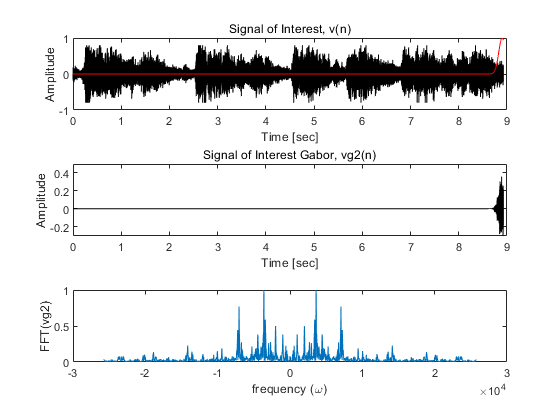 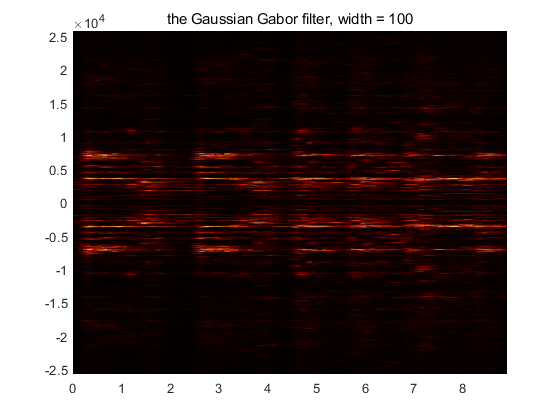
%width = 1000 Svt_spec3 = []; for j = 1:length(tslide) gf = exp(-10000*(t-tslide(j)).^2); Vgf = gf.*v; Vgtf = fft(Vgf); Svt_spec3 = [Svt_spec3;abs(fftshift(Vgtf))]; figure(7) subplot(3,1,1),plot(t,v,"k",t,gf,"r"); xlabel('Time [sec]'); ylabel('Amplitude'); title('Signal of Interest, v(n)'); subplot(3,1,2),plot(t,Vgf,"k"); xlabel('Time [sec]'); ylabel('Amplitude'); title('Signal of Interest Gabor, vg2(n)'); subplot(3,1,3),plot(ks,abs(fftshift(Vgtf))/max(abs(Vgtf))) xlabel('frequency (\omega)'), ylabel('FFT(vg2)') end figure(8) pcolor(tslide,ks,Svt_spec3.'),shading interp title('the Gaussian Gabor filter, width = 1000'); colormap(hot);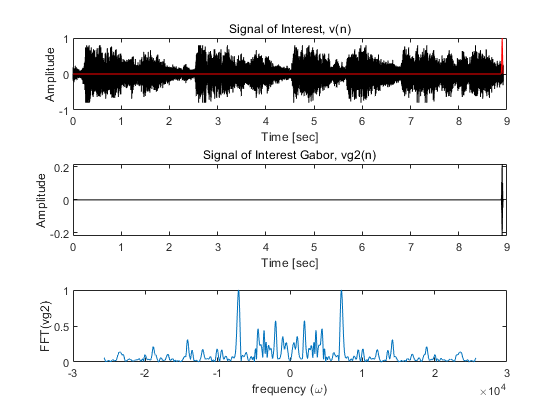 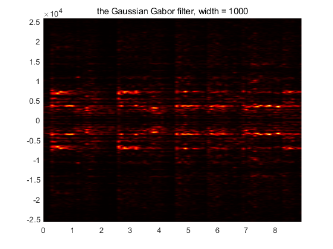
%oversampling gaussian Gaborfilter, width = 100. tslide_over = 0:0.01:L; Svt_spec = []; for j = 1:length(tslide_over) gf = exp(-100*(t-tslide_over(j)).^2); Vgf = gf.*v; Vgtf = fft(Vgf); Svt_spec = [Svt_spec;abs(fftshift(Vgtf))]; figure(9) subplot(3,1,1),plot(t,v,"k",t,gf,"r"); xlabel('Time [sec]'); ylabel('Amplitude'); title('Signal of Interest, v(n)'); subplot(3,1,2),plot(t,Vgf,"k"); xlabel('Time [sec]'); ylabel('Amplitude'); title('Signal of Interest Gabor, vg(n)'); subplot(3,1,3),plot(ks,abs(fftshift(Vgtf))/max(abs(Vgtf))) xlabel('frequency (\omega)'), ylabel('FFT(vg2)') end figure(10) pcolor(tslide_over,ks,Svt_spec.'),shading interp title('oversampling gaussian Gaborfilter, width = 100'); colormap(hot);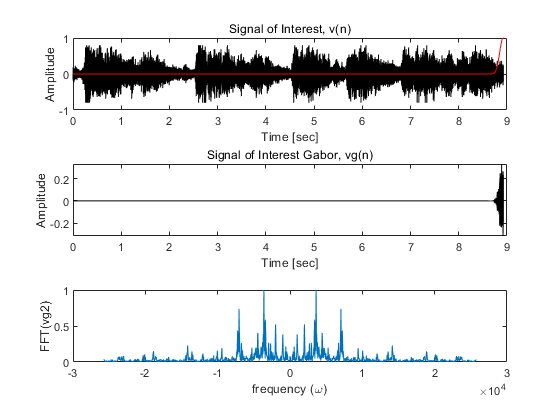 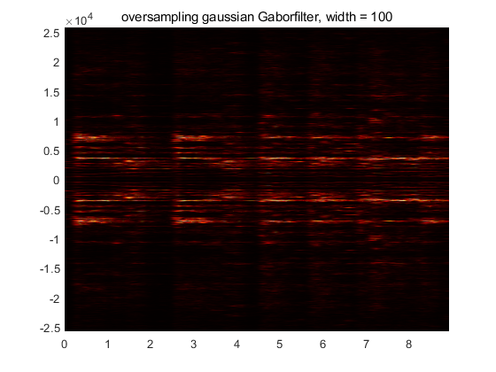
%undersampling gaussian Gaborfilter, width = 100. tslide_under = 0:0.5:L; Svt_spec = []; for j = 1:length(tslide_under) gf = exp(-100*(t-tslide_under(j)).^2); Vgf = gf.*v; Vgtf = fft(Vgf); Svt_spec = [Svt_spec;abs(fftshift(Vgtf))]; figure(11) subplot(3,1,1),plot(t,v,"k",t,gf,"r"); xlabel('Time [sec]'); ylabel('Amplitude'); title('Signal of Interest, v(n)'); subplot(3,1,2),plot(t,Vgf,"k"); xlabel('Time [sec]'); ylabel('Amplitude'); title('Signal of Interest Gabor, vg(n)'); subplot(3,1,3),plot(ks,abs(fftshift(Vgtf))/max(abs(Vgtf))) xlabel('frequency (\omega)'), ylabel('FFT(vg2)') end figure(12) pcolor(tslide_under,ks,Svt_spec.'),shading interp title('undersampling gaussian Gaborfilter, width = 100.'); colormap(hot);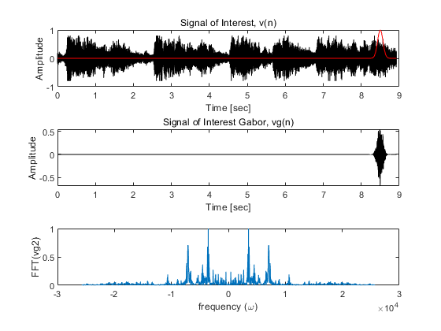 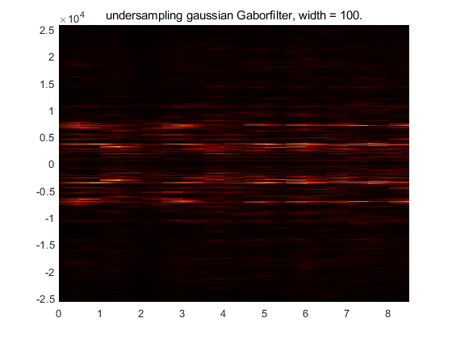
Mexican hat wavelet
Svt_spec = []; tao = 0.1; for j = 1:length(tslide) gf = (2./(sqrt(3.*tao).*(pi.^(1./4)))).*(1-((t-tslide(j))./tao).^2).*exp(-(((t-tslide(j)).^2)./(2.*tao.^2))); Vgf = gf.*v; Vgtf = fft(Vgf); Svt_spec = [Svt_spec;abs(fftshift(Vgtf))]; figure(13) subplot(3,1,1),plot(t,v,"k",t,gf,"r"); xlabel('Time [sec]'); ylabel('Amplitude'); title('Signal of Interest, v(n)'); subplot(3,1,2),plot(t,Vgf,"k"); xlabel('Time [sec]'); ylabel('Amplitude'); title('Signal of Interest Gabor, vg2(n)'); subplot(3,1,3),plot(ks,abs(fftshift(Vgtf))/max(abs(Vgtf))) xlabel('frequency (\omega)'), ylabel('FFT(vg2)') end figure(14) pcolor(tslide,ks,Svt_spec.'),shading interp title('Mexican hat wavelet'); colormap(hot);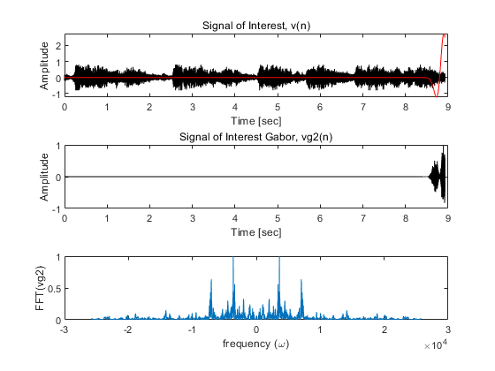 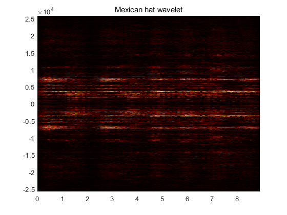
%step-function (Shannon) window. Svt_spec = []; step_width = 0.2; for j = 1:length(tslide) gf = abs((t-tslide(j)))<=step_width; Vgf = gf.*v; Vgtf = fft(Vgf); Svt_spec = [Svt_spec;abs(fftshift(Vgtf))]; figure(15) subplot(3,1,1),plot(t,v,"k",t,gf,"r"); xlabel('Time [sec]'); ylabel('Amplitude'); title('Signal of Interest, v(n)'); subplot(3,1,2),plot(t,Vgf,"k"); xlabel('Time [sec]'); ylabel('Amplitude'); title('Signal of Interest Gabor, vg2(n)'); subplot(3,1,3),plot(ks,abs(fftshift(Vgtf))/max(abs(Vgtf))) xlabel('frequency (\omega)'), ylabel('FFT(vg2)') end figure(16) pcolor(tslide,ks,Svt_spec.'),shading interp title('step-function (Shannon) window wavelet'); colormap(hot);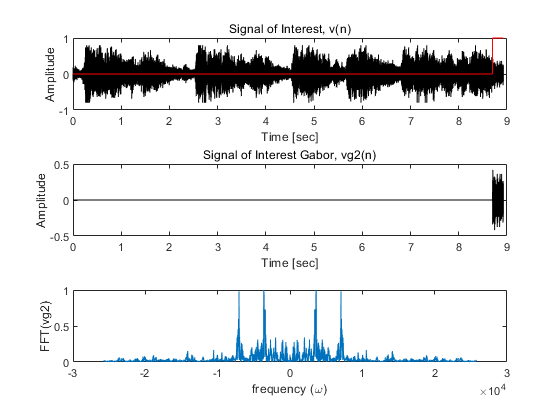 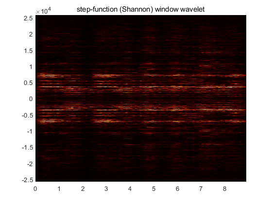
clear all; close all; clc %Part II figure(17) [y,Fs] = audioread('music1.wav'); tr_piano=length(y)/Fs; % record time in seconds plot((1:length(y))/Fs,y'); xlabel('Time [sec]'); ylabel('Amplitude'); title('Mary had a little lamb (piano)'); v = y'; t = (1:length(y))/Fs; tslide = 0:0.1:tr_piano; n = length(v); L = length(v)/Fs; k=(2*pi/L)*[0:n/2-1 -n/2:-1]; ks=fftshift(k); Svt_spec = []; for j = 1:length(tslide) gf = exp(-100*(t-tslide(j)).^2); Vgf = gf.*v; Vgtf = fft(Vgf); Svt_spec = [Svt_spec;abs(fftshift(Vgtf))]; figure(19) subplot(2,1,1),plot(t,v,"k",t,gf,"r"); xlabel('Time [sec]'); ylabel('Amplitude'); title('Signal of Interest, v(n)'); subplot(2,1,2),plot(t,Vgf,"k"); xlabel('Time [sec]'); ylabel('Amplitude'); title('Signal of Interest Gabor, vg(n)'); end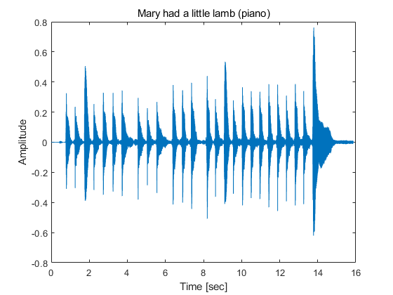 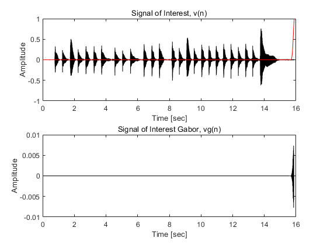
figure(18) pcolor(tslide,ks,Svt_spec.'),shading interp ylim([-5000,5000]); title('Mary had a little lamb (piano)'); colormap(hot);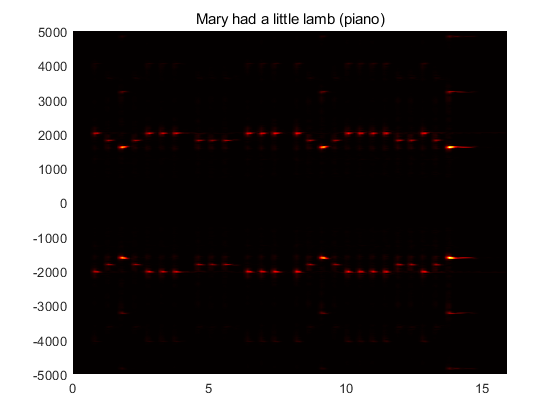
figure(19) [y,Fs] = audioread('music2.wav'); tr_rec=length(y)/Fs; % record time in seconds plot((1:length(y))/Fs,y); xlabel('Time [sec]'); ylabel('Amplitude'); title('Mary had a little lamb (recorder)'); v = y'; t = (1:length(y))/Fs; tslide = 0:0.1:tr_rec; n = length(v); L = length(v)/Fs; k=(2*pi/L)*[0:n/2-1 -n/2:-1]; ks=fftshift(k); Svt_spec = []; for j = 1:length(tslide) gf = exp(-100*(t-tslide(j)).^2); Vgf = gf.*v; Vgtf = fft(Vgf); Svt_spec = [Svt_spec;abs(fftshift(Vgtf))]; figure(20) subplot(2,1,1),plot(t,v,"k",t,gf,"r"); xlabel('Time [sec]'); ylabel('Amplitude'); title('Signal of Interest, v(n)'); subplot(2,1,2),plot(t,Vgf,"k"); xlabel('Time [sec]'); ylabel('Amplitude'); title('Signal of Interest Gabor, vg(n)'); end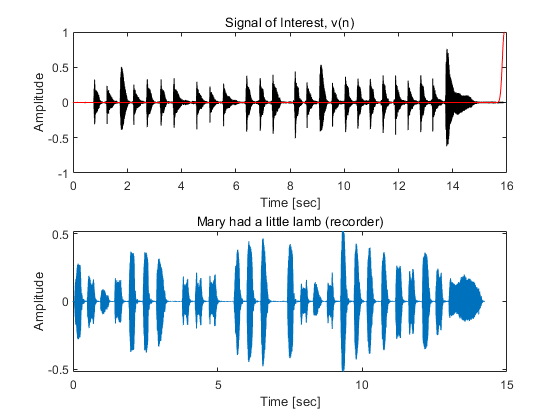 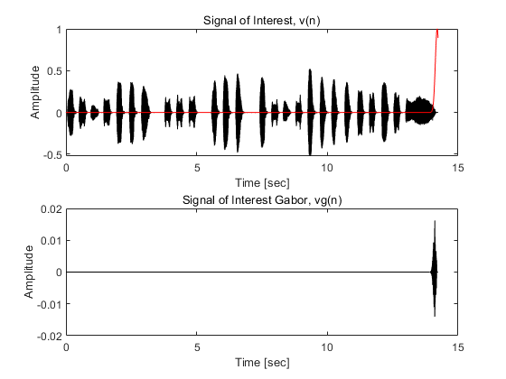
figure(21) pcolor(tslide,ks,Svt_spec.'),shading interp ylim([-8000,8000]); title('Mary had a little lamb (recorder)'); colormap(hot);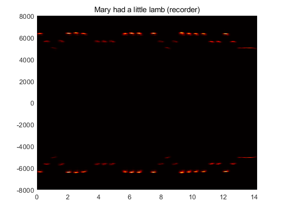